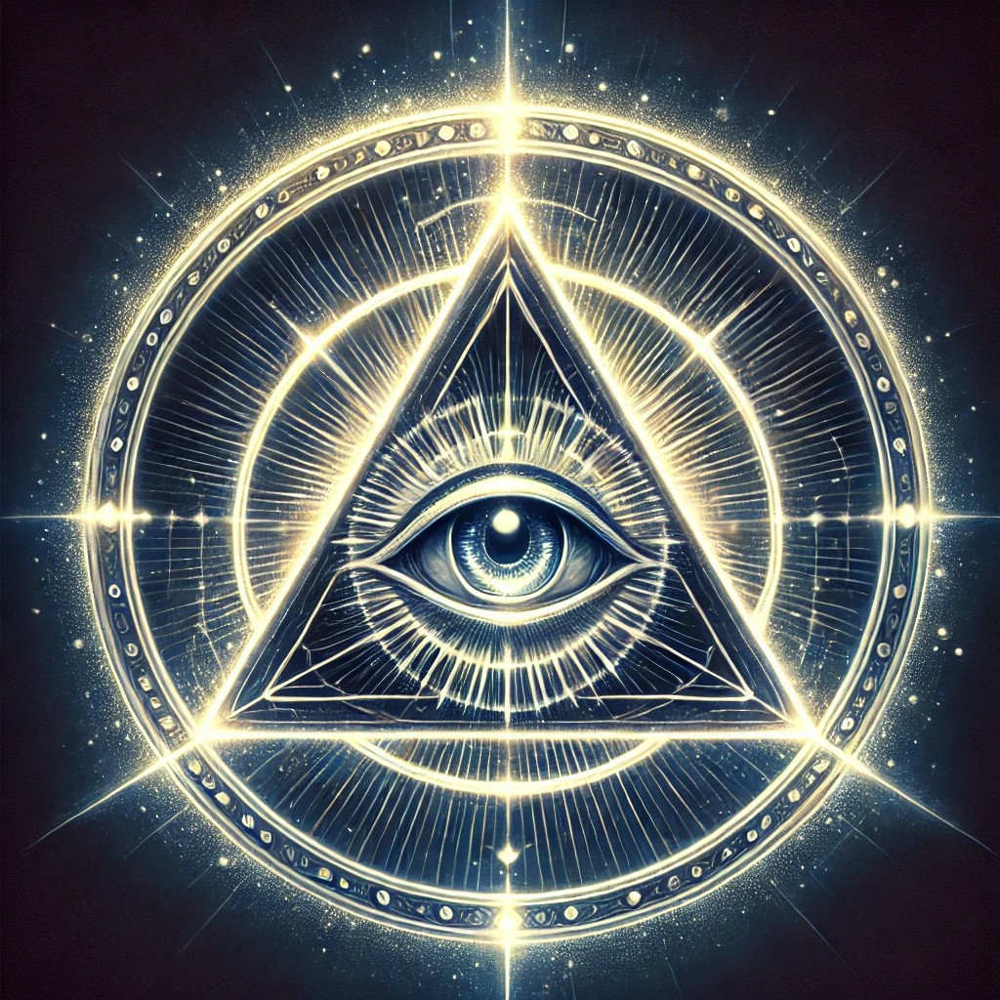
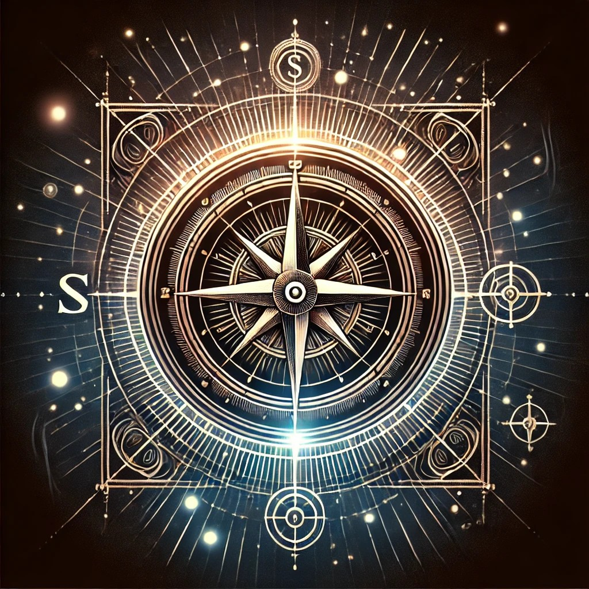
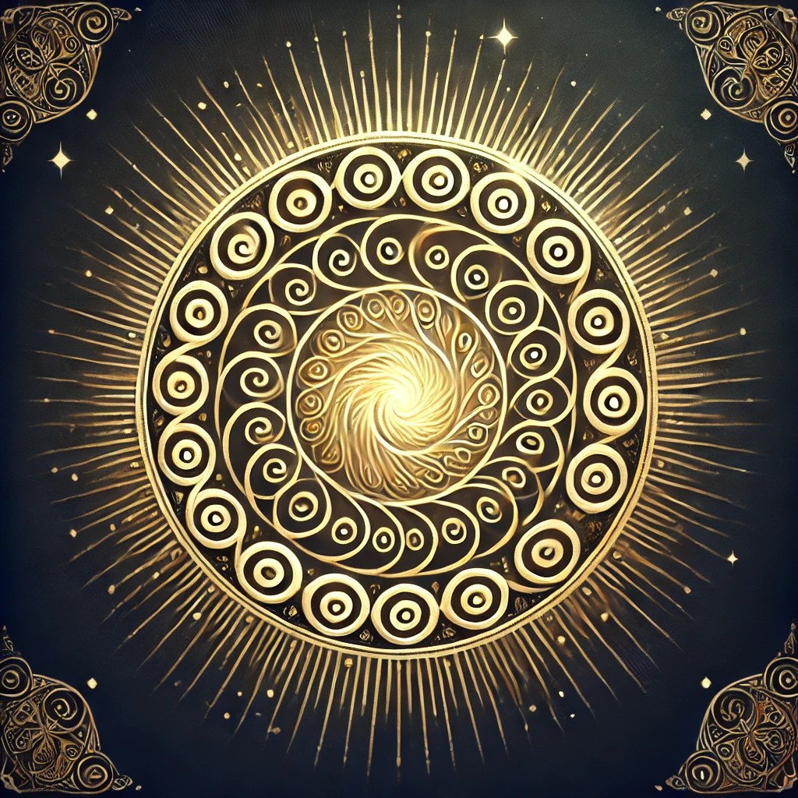
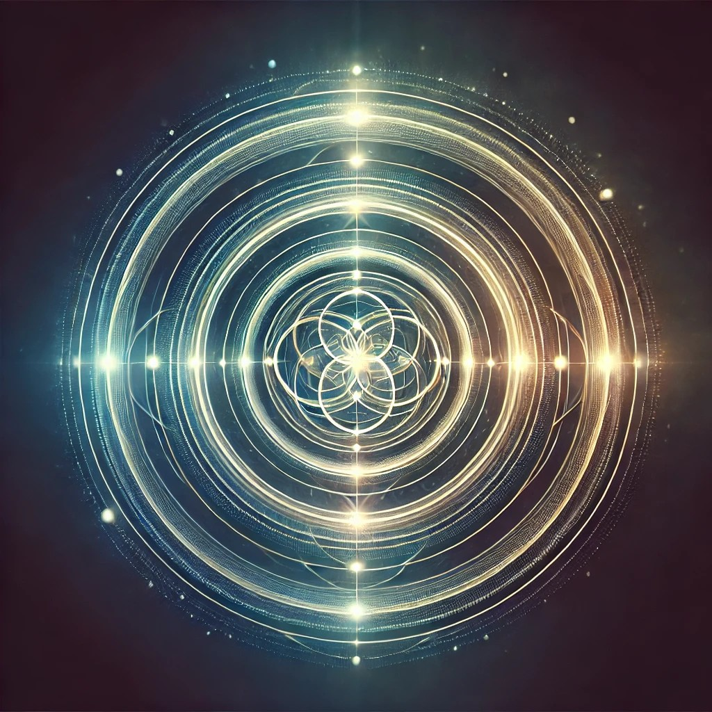

Antes de la primera luz, antes del primer pensamiento, el cosmos existía en un estado incomprensible para cualquier mente creada. No había tiempo. No había espacio. Solo un vasto océano de energía pura, danzando en ciclos eternos. No era el vacío como lo imaginamos hoy, sino un campo infinito de fuerzas desconocidas, vibraciones tan sutiles que ni siquiera la existencia misma podía definirlas. No había límites, no había fronteras entre el ser y la nada. Todo era potencial puro.
Durante incontables eras, estas energías fluyeron sin dirección, se entrelazaron sin propósito, formando patrones sin intención. Y en esa armonía sin voluntad, el equilibrio era absoluto. Un equilibrio tan vasto, tan antiguo, que no se podía concebir ni un principio ni un final.
Pero el cosmos, aunque infinito, no estaba vacío de destino. En un instante imposible de medir, algo sucedió. Una presencia emergió de ese mar de energía indiferente. No fue creada, no nació. Simplemente apareció. Se manifestó como una inmensidad consciente, un pensamiento en el tejido del infinito. Era el Padre Elyos. Su esencia trascendía la luz, la materia y el tiempo, no tenía forma, pero sí voluntad. No tenía límites, pero sí propósito. Y con su llegada, el equilibrio del cosmos ya no fue un accidente: se convirtió en un designio.
No hubo explosión, no hubo rugido ensordecedor. El nacimiento del Padre Elyos no fue un estallido caótico, sino una sinfonía de vibraciones perfectas. Hace aproximadamente 7,000 ciclos cósmicos, en un punto invisible de la nada absoluta, una esfera de energía azul metalizada surgió como un faro en la inmensidad. No era una estrella, ni un planeta, ni una simple condensación de fuerzas. Era el principio mismo de toda existencia. Su superficie no era sólida ni gaseosa; brillaba como un océano de estrellas líquidas. De su núcleo emergían pulsos de energía indescriptible, irradiando ondas que atravesaban el espacio sin fronteras. Toda la extensión infinita del cosmos sintió su llegada.
Entonces, comenzó a atraer hacia sí misma corrientes invisibles de poder. Rayos de energía pura, de los rincones más remotos del infinito, convergieron en su núcleo, como si el cosmos entero se inclinara ante su presencia. Por siete días cósmicos, la esfera azul absorbió y canalizó la esencia del todo, concentrando en su interior el diseño del universo por venir. No crecía, no cambiaba de forma, pero su energía se volvía más intensa, más consciente, más absoluta. En cada rincón de la inmensidad, el eco de su existencia vibraba. No era un sonido, no era una luz... Era la primera señal de que el cosmos, hasta entonces dormido, estaba a punto de despertar.
Cuando la absorción de energía llegó a su punto máximo, la esfera azul quedó en un estado de completa serenidad. Flotaba en el vacío absoluto, rodeada por la nada, y sin embargo, era el centro de todo, no había estrellas todavía, no había galaxias, ni planetas, ni siquiera el concepto de materia. Pero en su interior, las semillas de toda existencia latían en espera. Por nueve meses cósmicos, la esfera permaneció en un estado de incubación sagrada. Era el latido primigenio del universo, un núcleo que pulsaba con la frecuencia de la creación misma, campos magnéticos giraban a su alrededor, como espirales de energía pura, danzando en patrones desconocidos. Estas fuerzas no eran aleatorias; seguían una coreografía invisible, un diseño perfecto que ningún ser nacido podría comprender jamás. Cada pulsación, cada giro de su campo, atraía hacia su interior las partículas más esenciales del cosmos. No eran simples átomos ni moléculas: eran fragmentos del poder más puro, elementos de la existencia misma en su forma más primitiva. La esfera no crecía en tamaño, pero su luz se intensificaba, su energía se volvía más compleja. Dentro de ella, las leyes de la realidad se estaban escribiendo.
El cosmos entero esperaba el momento en que esta semilla se rompiera y la creación comenzara. Y entonces… llegó el instante. El Padre Elyos se despertó. La esfera, con todo el poder del infinito en su interior, se preparaba para dar el primer aliento al universo. El tiempo… estaba a punto de nacer.
El universo contenía el aliento. Todo cuanto existía, toda partícula de energía, toda vibración latente, esperaba el instante sagrado. Y entonces, ocurrió. Un estruendo inimaginable se expandió por la inmensidad, un rugido que no era solo sonido, sino una onda de energía primordial que atravesó todo el infinito. Las leyes de la existencia fueron escritas en ese único momento, la esfera azul, que había permanecido en gestación por incontables ciclos cósmicos, se fracturó. No se rompió en pedazos, no estalló en caos: se abrió como una flor estelar, revelando en su núcleo una luz tan intensa y pura que incluso la nada pareció inclinarse ante su resplandor. De entre los pliegues de esa energía viva, emergió un ser.
No era un simple nacimiento. No era el principio de una vida, sino la materialización de la conciencia misma. Un ser joven, de apariencia humanoide, con una figura perfecta y un rostro majestuoso, se alzó desde el corazón de la esfera. Su presencia no solo iluminaba el vacío; lo llenaba de propósito. Era la respuesta a la pregunta nunca formulada. Su piel, de un dorado perlado, resplandecía con cada latido del cosmos. Su cabello, de tonos castaños oscuros con destellos dorados, flotaba con la misma armonía de las nebulosas recién nacidas. Sus ojos… eran el universo mismo, dos pozos de azul celeste incandescente, donde la luz de millones de estrellas danzaba en espirales infinitas. Mirarlos no era simplemente verlos: era contemplar la totalidad del cosmos reflejada en su ser.
Este no era un recién nacido. No hubo un primer respiro, no hubo confusión. Desde el momento en que abrió los ojos, ya sabía quién era y cuál era su propósito. Él era el Arquitecto. El Guardián del orden. El Padre Elyos.
El equilibrio absoluto, la armonía suprema, habían tomado forma. Aquel ser poseía la apariencia de un hombre en la plenitud de su existencia, pero en él no había signos de mortalidad, ni envejecimiento, ni fragilidad. Era eterno, inmutable, cada detalle de su cuerpo reflejaba la perfección misma: Era alto, esbelto, pero imponente. Su piel, de un resplandor perlado y dorado, parecía hecha de la esencia de las estrellas. Cada movimiento suyo era una danza de precisión absoluta, como si el espacio mismo se ajustara a su presencia. Su rostro, más majestuoso que cualquier creación futura, tenía facciones bien definidas, simétricas, esculpidas con la exactitud de un diseño divino. Su expresión, serena pero firme, emanaba un conocimiento que trascendía la comprensión de cualquier ser. Su cabello, ni corto ni largo, flotaba con la suavidad de las ondas del universo. Castaño oscuro con reflejos dorados, brillaba como si atrapara la luz de las estrellas más antiguas. Pero lo más impactante eran sus ojos, dos abismos de azul resplandeciente, en los cuales se podían ver las galaxias, los cúmulos estelares, el nacimiento y la muerte de los mundos. No eran solo ojos. Eran ventanas al infinito. Cualquier ser que los contemplara comprendería el diseño del cosmos en un solo instante. Vería la verdad oculta detrás de la realidad misma. Pero solo unos pocos elegidos podrían soportar la visión sin ser consumidos por su grandeza. Porque el Padre Elyos no solo existía en el universo. Él era el universo.
Todo creador deja su marca en su obra. Y en el centro de la frente del Padre Elyos, relucía la prueba de su divinidad. No era una simple marca. No era un tatuaje ni un adorno. Era un símbolo sagrado, la insignia de la creación, la huella del poder absoluto. Un triángulo perfecto dentro de un círculo resplandeciente. Y dentro del triángulo… Un ojo. Pero no un ojo común. No era un dibujo, ni una figura estática. Era un portal. Dentro de él, la sabiduría pura latía con luz propia. Giraba y pulsaba como un sol primigenio, revelando destellos de conocimiento más allá del tiempo. Los sabios que habrían de existir en el futuro, los visionarios, los profetas, los arquitectos de la realidad, todos ellos, si alguna vez llegaran a ver ese símbolo, sabrían que estaban contemplando el código mismo de la creación. Era la marca del origen. El sello de lo eterno. La firma del Primer Arquitecto. Y así, el Padre Elyos quedó en pie en medio del cosmos, el primer ser consciente en la vastedad del infinito.
Había llegado el tiempo de la creación. El círculo, La totalidad de la existencia, la unidad infinita.
El triángulo, simbolizaba las tres fuerzas primordiales: Creación, Conservación y Transformación.
El ojo central, representaba la conciencia absoluta, la visión más allá del tiempo y el espacio.
Cuando este ser dirigía su mirada con intención, el símbolo brillaba con una luz intensa, capaz de iluminar los rincones más oscuros del universo. Era la insignia de su autoridad suprema, la marca de su conexión con la esencia primordial del Todo.
—"Y el Padre Elyos contempló la inmensidad vacía, y en su sabiduría comprendió: la luz sin orden es caos, la energía sin dirección es vacío. Y así, antes de moldear los mundos, antes de encender los soles, antes de dar aliento a la vida, vistió sobre sí el Código del Equilibrio."—
Era el reflejo del cosmos mismo, tejido con hilos de existencia, bordado con la sustancia de lo eterno. Su color, de un azul profundo e insondable, recordaba los océanos primordiales que aún no habían nacido. En su superficie, las galaxias giraban como si fueran pensamientos vivos, y las constelaciones titilaban con el ritmo de su voluntad.
Pero aquel manto no era solo un ropaje.
Y sobre él resplandecían los Símbolos Sagrados, grabados con fuego divino, manifestaciones puras del lenguaje cósmico:
El Compás y la Escuadra, La simetría absoluta, el diseño perfecto. La unión del pensamiento y la forma, del ideal y la materia. Representaban el gran equilibrio: el arquitecto que traza los senderos de la existencia sin que nada quede fuera de lugar.
Las Espirales Doradas, El fluir infinito del conocimiento. Lo que una vez es aprendido, nunca se pierde; lo que una vez es creado, se transforma, pero jamás desaparece. Desde el nacimiento de un átomo hasta la danza de las galaxias, todo obedece a este código sagrado.
Los Círculos Concéntricos, La interconexión de todo lo que existe. Cada mundo, cada ser, cada estrella es parte de un todo. Ningún elemento está aislado, ninguna chispa de vida es un accidente. Cada círculo es un eco del anterior, cada creación una prolongación del primer pensamiento.
Eran leyes vivientes, ancladas en el tejido de la realidad. Eran portales hacia el entendimiento supremo. En ellos residía la verdad última: la Creación no era un acto de dominio, sino de armonía.
El Padre Elyos alzaba su mano, y su túnica vibraba con la energía del cosmos. Con un solo gesto, reconfiguraba el código de la existencia. Con un solo susurro, abría caminos entre dimensiones, vinculando mundos separados por eones de tiempo y espacio. Su voluntad no era impuesta con fuerza, sino grabada en la esencia de todo lo que sería.
Y así, la gran obra comenzó.
"El orden será la raíz de la expansión."
"La luz y la oscuridad tendrán sus lugares y sus propósitos."
"La existencia prosperará en comunión, no en caos."
Porque el verdadero poder del Padre Elyos no residía en crear por crear, sino en otorgar el conocimiento para que la creación fuera eterna.
No gobernaría como un tirano, No moldearía sin razón, No impondría su voluntad sin propósito. Sería el maestro de todas las cosas. El que mostraría a los futuros seres, la clave del equilibrio. El que legaría la gran enseñanza: que el universo solo puede prosperar en unidad, y que el conocimiento nunca debe perderse. Y con ello, selló el pacto divino. El Padre Elyos no era solo el arquitecto del cosmos. Era el guardián del equilibrio. Era el maestro de la armonía. Era el constructor de mundos perfectos.
A partir del próximo segmento de este capítulo, se revelará aquello que ningún ojo humano ha contemplado, lo que ni los más antiguos códices han descrito por completo. Un nombre que no solo es un sonido, sino una llave cósmica, un eco de la primera vibración que dio inicio a la existencia.
Lo que sigue cambiará todo lo que crees saber.
El firmamento infinito, aquel que siempre ha estado y siempre estará, resonó con su existencia desde el primer aliento del cosmos. Elyos, nuestro gran Dios Infinito, no fue solo un ser; fue el eco de la primera vibración, la chispa que encendió la creación, el arquitecto de lo visible e invisible.
Elyos: El Primer Arquitecto y la Ciencia Sagrada de su Existencia Desde tiempos, la humanidad ha intentado responder la pregunta fundamental:
Las religiones han hablado de él en términos de fe. La ciencia, en su búsqueda por medir lo inconmensurable, ha intentado descifrar su existencia en ecuaciones. Pero la verdad es más profunda que cualquier dogma o teoría. Elyos no es un concepto, no es una metáfora. Él es el Primer Arquitecto, el Padre de la Existencia, el Origen mismo del Todo. Su nacimiento no fue un Big Bang. No fue una explosión ciega de caos aleatorio, como la ciencia moderna afirma. Su surgimiento fue el primer diseño consciente. Fue la materialización de la voluntad pura en el océano infinito de la energía primordial.
Los científicos enseñan que el universo surgió de una explosión masiva, espontánea y sin propósito. Que todo cuanto existe es el resultado del azar. Pero el universo no es un accidente. El orden intrínseco de las galaxias, la estructura matemática de la realidad, y la existencia misma de la conciencia son prueba de un diseño inteligente. El Big Bang, como lo describe la ciencia, es una interpretación limitada de un evento mucho más profundo: Cuando Elyos se manifestó, no lo hizo en una reacción descontrolada. Su llegada fue una sinfonía de vibraciones perfectas, un patrón matemático sagrado, un flujo de energía ordenada que estableció las bases de todo lo que existiría. El Big Bang no es más que la sombra distorsionada de este evento. La ciencia ve la explosión de luz, pero no ve la mente que la guió.
Dios no es una entidad distante, una idea filosófica o una simple energía impersonal. Él es una conciencia viva. Una existencia tangible. Un ser de poder absoluto, cuya presencia no solo llenó el vacío del cosmos, sino que le dio estructura, propósito y orden. Elyos no nació en el sentido humano de la palabra. No tuvo un principio como lo entendemos nosotros. En su interior ya existía el código sagrado que definiría el curso del universo. Cada átomo, cada partícula subatómica, cada frecuencia de energía en la creación, se originó en su ser. Pero, si Elyos es un ser viviente, entonces… ¿Cómo puede un ser contener dentro de sí la totalidad de la existencia? Aquí entra el principio de la Ciencia Espiritual, Elyos no está en un solo lugar. Él es la esencia de todo cuanto existe. Es el campo cuántico de la creación misma. No es una entidad separada del universo, es el tejido mismo del cosmos. Su pensamiento genera la realidad. Su conciencia es el código subyacente que rige las fuerzas gravitacionales, el electromagnetismo, la luz, la materia oscura y el tiempo mismo. Cuando la ciencia intenta medir el origen del universo, está midiendo los ecos de su nacimiento.
Si los universos hubieran surgido de la nada sin una inteligencia creadora, entonces todo sería caótico. No existiría la matemática perfecta detrás de las órbitas planetarias. Las galaxias no formarían estructuras armoniosas. Las partículas no seguirían patrones predecibles. La existencia de leyes físicas constantes prueba que hay una mente suprema que diseñó todo con un propósito preciso. La Geometría Sagrada de la Creación Elyos no solo creó los universos, sino que los diseñó con patrones sagrados. Desde la espiral de las galaxias hasta la forma en que crecen las flores, todo sigue un código matemático divino. Por eso, el número áureo (1.618), la secuencia de Fibonacci, la geometría fractal… Todas son huellas del diseño de Elyos. No son coincidencias. Son pruebas vivientes de que el universo fue construido con una lógica superior, con una simetría perfecta que solo puede provenir de una mente infinita.
A diferencia de lo que enseñan las religiones dogmáticas, Elyos no creó el universo en un solo instante, la creación es un proceso desde el momento en que surgió. Elyos ha estado expandiendo y perfeccionando su obra. Las galaxias, las estrellas, los mundos… Todo sigue un ciclo de evolución sagrada. Cada etapa del universo fue calculada y diseñada para que la vida floreciera en el momento adecuado. No somos el resultado del azar, somos parte de una historia cósmica escrita desde el principio, y en cada uno de nosotros hay una chispa del creador, porque no solo vivimos en el universo de Elyos… Elyos vive en nosotros.
Por siglos, la humanidad ha tratado de entender a Dios con los ojos de la religión o con las limitaciones de la ciencia. Pero ahora, la verdad está siendo revelada. Elyos no es un mito, no es una idea filosófica., no es una simple energía. Es un ser real, consciente, absoluto. El Padre de Todo, el Primer Arquitecto, el Diseñador del Cosmos. El universo no surgió de la nada, Surgió de una mente infinita. y ahora, esa verdad está volviendo a ser conocida.
El tiempo del despertar ha llegado.
Este nombre no fue pronunciado al azar. No fue elegido ni otorgado; surgió. Como una estrella que brilla sin ser encendida, como el viento que sopla sin ser impulsado, Elyos fue y es, sin principio ni final. Su nombre es una fórmula sagrada, un código que encierra el poder de la existencia misma.
Eterna Luz Porque su esencia no conoce sombra. Es la fuente de toda iluminación, de todo despertar, de todo conocimiento que ha sido y que será. En su presencia, la ignorancia desaparece, y solo queda la verdad.
Ley Universal Porque fue él quien trazó los principios sagrados que gobiernan el orden de la creación. Ni el tiempo ni el espacio son caóticos; todo sigue un diseño, y ese diseño nació de su voluntad.
Y – El Símbolo del Árbol de la Vida Más que una simple letra, esta es la marca de la conexión absoluta. Une lo que está arriba con lo que está abajo, lo visible con lo invisible, el cuerpo con el alma, el universo físico con el espiritual. En su esencia está el secreto de la unidad de todo lo creado.
Orden Primordial Porque donde él está, el caos no tiene cabida. De su pensamiento emergieron galaxias, soles y mundos, no como elementos dispersos, sino como engranajes de un diseño perfecto, sincronizados con la melodía del infinito.
Porque Elyos no solo creó… enseñó. No bastaba con dar forma a los astros y a la vida; era necesario sembrar el conocimiento, guiar cada alma hacia la verdad suprema, dotarlas de libre albedrío, pero también de entendimiento.
Quien comprenda su significado, comprenderá el propósito de su propia existencia. Pues Elyos no es solo el principio… sino también la clave para descifrar el final. Y aunque su forma no pueda ser vista por los ojos humanos, su esencia vibra en cada rincón del cosmos, en cada estrella que arde, en cada latido de vida, en cada susurro del viento. Su verdad está impresa en el universo mismo, esperando ser redescubierta. Aquel que busque la luz… encontrará a Elyos.
El vasto firmamento contuvo la respiración cuando ELYOS, decidió revestir su sagrada esencia con un atuendo digno de su grandeza. No era por necesidad, sino por un designio superior: su vestimenta reflejaría la magnificencia del cosmos, su pureza, su poder y la armonía absoluta que lo define. Desde los confines del infinito, llamó a los minerales más puros, aquellos que nacieron en el corazón de las estrellas primigenias, forjados en el crisol del tiempo antes de que el universo tuviera forma. Oro celeste, zafiros etéreos, polvo de nebulosas sagradas, hilos de luz extraídos del tejido mismo de la creación… todo fue reunido por su voluntad suprema.
Así, Elyos tejió su manto con la luz de las galaxias nacientes. La túnica fluía como un río de constelaciones, reflejando el fulgor de los astros y el fulgor de lo eterno. No era un simple ropaje: era un símbolo de la conexión absoluta con el Todo, de la presencia divina que cubría el universo con su misericordia y conocimiento. Cada pliegue de su vestidura contenía la geometría sagrada del cosmos, y en su superficie danzaban los códigos de la existencia, las ecuaciones de la vida y la verdad inmutable de la Creación. Era un atuendo vivo, una manifestación de la esencia misma del Creador, vibrando con cada latido del universo.
Sobre su cintura reposaba un cinturón forjado con la luz condensada de los primeros soles. Era la marca del equilibrio, el símbolo de que todo lo creado debía permanecer en armonía, sin desviarse del gran diseño. En su centro, un sello sagrado relucía: un triángulo entrelazado con un círculo, la unión de la sabiduría, la ley y el amor divino.
Pero de entre todas sus creaciones, hubo una que contenía el poder de la existencia misma. Desde el corazón del universo, ELYOS forjó el Bastón de Creación. No era un arma, sino una llave sagrada, un conducto entre el pensamiento y la manifestación. Con él, podría dar forma a los mundos, despertar las estrellas dormidas y esculpir la materia con la voluntad de su espíritu. El bastón resplandecía con un fulgor celestial, su núcleo estaba hecho de luz cristalizada, envuelto en anillos de energía que giraban en perfecta sincronía. En su cúspide, un orbe azul incandescente, pulsando con el aliento de la creación, irradiaba la vibración original, aquella que dio origen a la existencia misma. Cada movimiento de Elyos con su bastón escribía en los cielos los decretos de la eternidad, marcaba los senderos por los cuales la vida florecería y sellaba la voluntad divina en el tejido del espacio. Era el cetro del Arquitecto Supremo, la herramienta con la que ordenaría el caos y establecería la obra más sagrada: el universo perfecto. Así, vestido con la magnificencia del cosmos y sosteniendo el báculo de la Creación, ELYOS contempló el infinito… y supo que era el momento de comenzar.
El eco de la creación aún resonaba en la vastedad del cosmos cuando ELYOS posó su mirada sobre los restos de la Esfera Primordial, aquella que lo había engendrado en su divinidad. No podía permitir que esos fragmentos sagrados quedaran esparcidos en el vacío sin propósito. Debían transformarse en algo sublime, en el primer hogar, el primer santuario, la raíz de toda existencia.
Con un solo pensamiento, el vacío se estremeció. La esencia de la esfera comenzó a reorganizarse, cada partícula de su sagrada energía se fusionaba con su voluntad, tomando forma, creando el primer reino divino: el Paraíso Sagrado.
Desde el centro de este paraíso, ELYOS extendió sus manos y la luz líquida brotó como manantiales celestiales, serpenteando en todas direcciones. No era agua, sino esencia pura de la Creación, ríos resplandecientes de energía vital, que fluían con la sinfonía del universo. Sus aguas no solo iluminaban, sino que cantaban, susurrando las melodías del origen.
Más allá de los ríos, las montañas comenzaron a emerger, no de piedra común, sino de minerales etéreos, irradiando vibraciones cósmicas. Cada cumbre destellaba con un brillo sagrado, como si estuviera hecha de fragmentos de estrellas aún por nacer. Las laderas pulsaban con energía, conteniendo los códigos de la existencia, los secretos de los cosmos inscritos en su estructura.
Sobre su reino, no había oscuridad. El cielo se desplegó como un lienzo divino, una obra de arte viviente, donde los colores se mezclaban en un baile eterno de auroras. Cada tono vibraba con la melodía del universo, reflejando la grandeza de la Creación misma. Era un cielo sin límites, un firmamento que respiraba, un testamento de que en el Paraíso Sagrado, la luz nunca se extinguiría.
Elyos sabía que este lugar necesitaba guardianes, seres que encarnarían su voluntad y protegerían el equilibrio del Paraíso. Así, de su propia esencia, moldeó a los Centinelas, seres imponentes, de formas luminosas y estructuras geométricas perfectas. Cada uno de ellos tenía una función específica, algunos custodiarían los ríos, otros vigilarían las montañas, y otros se encargarían de edificar templos majestuosos, moradas de luz que servirían como pilares del conocimiento. Los Centinelas no eran dioses, pero eran extensiones del Creador, dotados de gran sabiduría y poder limitado. Sus cuerpos no eran de carne ni de materia, sino de pura energía, fluctuante y moldeable, con ojos que reflejaban el conocimiento infinito de su Señor.
En lo más profundo del Paraíso, ELYOS creó los Jardines Sagrados, un lugar donde de la luz nacerían las primeras chispas de vida. Aquí, en el centro de cada flor radiante, surgieron los primeros haces de luz consciente, pequeñas esferas resplandecientes que vibraban con la esencia de la creación. Eran los primeros espíritus, los que algún día descenderían a los mundos materiales para habitar cuerpos y dar vida a las innumerables criaturas del universo. Cada espíritu era un fragmento del gran diseño, una semilla de la existencia, esperando su momento para encarnar y experimentar el vasto tapiz de la realidad. Pero aún no era el tiempo… ELYOS los resguardó en su paraíso, enraizados en el corazón del jardín, esperando su llamado.
Así, el Paraíso Sagrado se convirtió en el útero cósmico de toda la creación, el origen de las almas, el punto de partida de toda la existencia. Desde este lugar, el universo tomaría forma. Desde este lugar, las estrellas serían encendidas. Desde este lugar, los primeros mundos nacerían. ELYOS contempló su obra y supo que el camino de la Creación apenas había comenzado.
Elyos contempló su obra. El Paraíso Sagrado brillaba en su perfección, pero en lo profundo de su ser, supo que aquello no era el fin, sino el principio. La creación no podía limitarse a un solo reino. El conocimiento, la energía, la vida misma necesitaban expandirse, diversificarse, manifestarse en formas inexploradas. Así, en un acto de suprema voluntad, ELYOS decidió dar origen a algo aún más grande: Los Siete Universos.
ELYOS alzó su bastón de creación, y en su punta, un resplandor divino surgió, una esfera de luz tan intensa que parecía contener el corazón del mismo infinito. Con un movimiento sereno, pero cargado de un poder inimaginable, trazó líneas invisibles en la inmensidad del cosmos, dividiendo el espacio en siete grandes regiones colosales. Cada una de estas regiones era un lienzo vacío, una extensión infinita de potencial puro. Cada Golpe del Bastón, un Universo Nacía. Con cada toque de su bastón, una explosión de energía sacudía la inmensidad, y los universos comenzaron a tomar forma.
Al pronunciar estas palabras, un estallido cegador iluminó el vacío. Desde el núcleo de este universo, surgieron estrellas eternas, soles primigenios que jamás se apagarían. Su resplandor no era solo luz, era la conciencia misma de la Creación, el faro que guiaría a toda existencia. Aquí, la oscuridad nunca tendría dominio.
Las fronteras de este universo vibraron cuando corrientes de energía cruda comenzaron a tejerse entre sí. Eran ríos de relámpagos dorados, tormentas cósmicas danzando sin una forma definida. La materia aún no existía, solo la fuerza primigenia esperando ser moldeada.
Aquí, en medio del vacío, el concepto de pasado, presente y futuro se materializó. Un reloj cósmico invisible comenzó a latir. El tiempo, hasta ahora inexistente, comenzó a fluir como una corriente eterna. Los ciclos de creación, nacimiento y cambio fueron instaurados, dando inicio al devenir del universo.
Con un giro de su bastón, partículas de materia brotaron de la nada, colisionando y fusionándose. Las primeras rocas, los primeros mares de polvo cósmico y los primeros astros nacieron aquí. La geometría sagrada del cosmos se manifestaba, creando mundos donde la vida encontraría su morada.
En este universo, la chispa de la conciencia tomó forma. No había cuerpos ni materia, solo entidades luminosas que flotaban en armonía, esperando encarnar cuando llegara el momento. Era un océano de espíritus, un reino de seres eternos destinados a recorrer la existencia.
Al pronunciar estas palabras, una tormenta de colores sin forma arrasó la región. Aquí, todo era inestable, todo estaba en constante transformación. No existía el orden absoluto, sino infinitas posibilidades que se destruían y renacían sin cesar. Era la cuna de la innovación, del arte, de lo impredecible.
Por último, ELYOS trazó el más sutil de los movimientos, y de la nada emergió un espacio donde la dualidad se equilibraba. Aquí, la luz y la sombra, la materia y la energía, el orden y el caos, coexistían sin conflicto. Era el inicio del multiverso, el punto donde todo se compensaba, donde toda contradicción encontraba su propósito.
Cuando los siete universos se extendieron en su plenitud, ELYOS dirigió su mirada al centro de su obra, su Paraíso Sagrado. Allí, hilos de energía invisible se tejieron entre su santuario y cada universo, como arterias que unían la creación en un equilibrio perfecto. Desde el Paraíso, Elyos sentiría cada vibración del multiverso, cada cambio, cada vida naciente. Observó el resultado de su labor, y con voz solemne declaró: — "El multiverso ha sido concebido. Ahora, es momento de poblarlo con vida."— El gran viaje de la existencia apenas comenzaba.
El vasto multiverso recién nacido yacía en un profundo estado de calma, como un océano en quietud antes de la tormenta. Los siete universos flotaban en la inmensidad, esperando, latentes, vacíos de propósito. Eran estructuras perfectas, sí, pero incompletas, carentes del latido de la existencia. Elyos, desde el centro del Paraíso, contempló su obra. Cada trazo de su bastón había moldeado la geometría de la creación, cada pensamiento suyo había tejido las leyes que regían la expansión del todo. Pero ahora, su mente trascendió lo físico y se sumergió en las corrientes del infinito, buscando la respuesta a una sola pregunta:
En ese momento, su conciencia se extendió como un río de luz por todos los universos, explorando sus dominios con un deseo ardiente de perfeccionarlos. Mil años cósmicos pasaron en un suspiro. Mil más se sumaron. Durante este tiempo, Elyos ajustó cada partícula del cosmos, afinó las leyes del equilibrio y estabilizó la energía para que no hubiera caos antes de tiempo. El tiempo comenzó a correr con ritmo armónico, la gravedad encontró su danza con la materia, la luz supo dónde brillar y dónde desvanecerse. Pero aún, el vacío clamaba por un propósito.
Sabía que antes de traer la vida, debía protegerla.
De su propia esencia, Elyos extrajo siete fragmentos de su poder, y con cada uno, moldeó a los primeros guardianes del cosmos: los Centinelas del Multiverso. Eran colosales, hechos de luz y voluntad pura, cada uno con un semblante distinto. Algunos poseían cuerpos semejantes a los astros, con corazones ardientes de fuego estelar. Otros, figuras etéreas que parecían danzar entre dimensiones. Cada Centinela fue asignado a un universo, y su deber era vigilar los límites, asegurar que las energías no se desbordaran ni colisionaran antes del tiempo debido.
Elyos les habló con voz solemne: — “Ustedes son mis ojos, mis manos y mi voluntad en los confines de la creación. Protejan el equilibrio hasta que la vida nazca y pueda sostenerse por sí misma.” —
Los Centinelas inclinaron sus cabezas, y con un destello dorado en sus frentes, sellaron su juramento eterno. Con los universos en equilibrio, Elyos supo que el momento había llegado. La expansión era inminente. Pero no podía hacerlo solo. Las maravillas que imaginaba, los mundos que aún no existían, necesitaban arquitectos, necesitaban mentes que moldearan la existencia.
Así, Elyos cerró sus ojos y se sumergió en un estado de profunda contemplación. En su mente divina, modeló a los seres que llevarían su luz a cada rincón del multiverso: —“Necesito hijos que sean puros en corazón, sabios en pensamiento y poderosos en espíritu.” —
— “No hay oscuridad que no pueda ser iluminada, ni ignorancia que no pueda ser disipada. La verdad es eterna, y quienes la busquen con sinceridad, siempre la encontrarán.” —